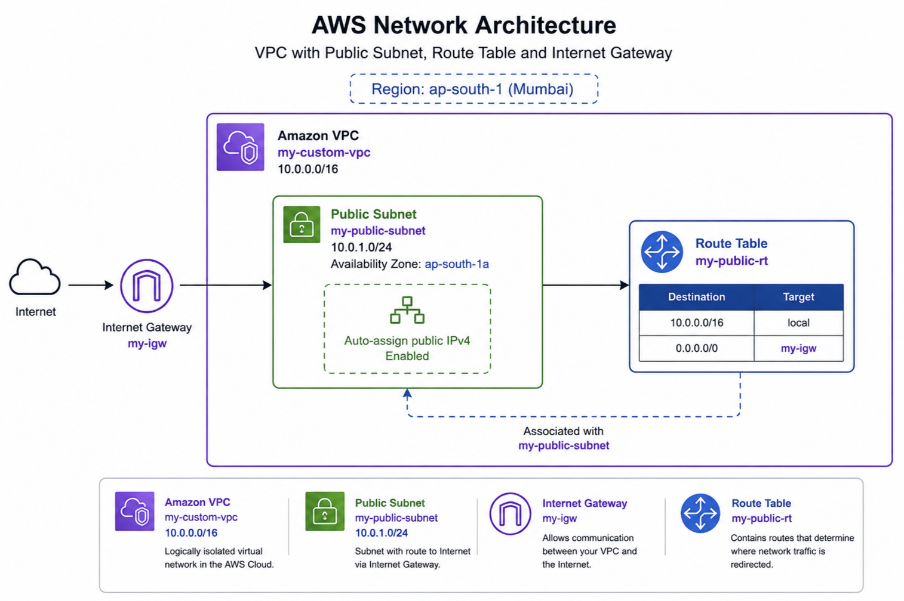
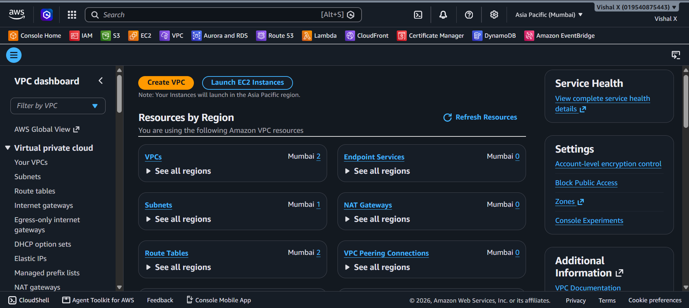
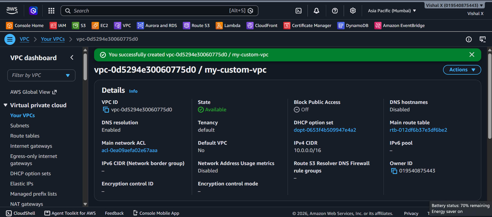
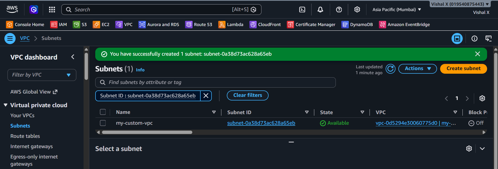
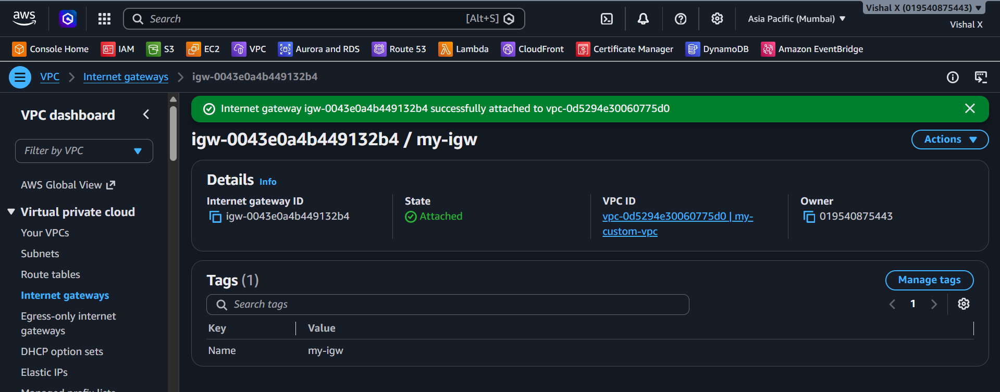
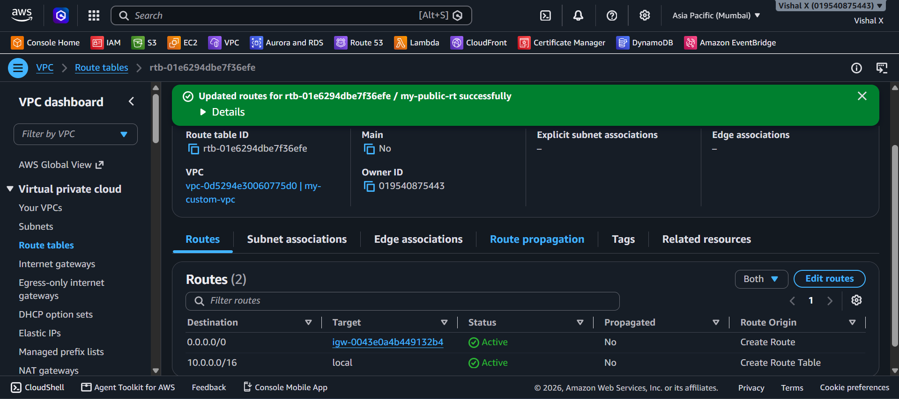
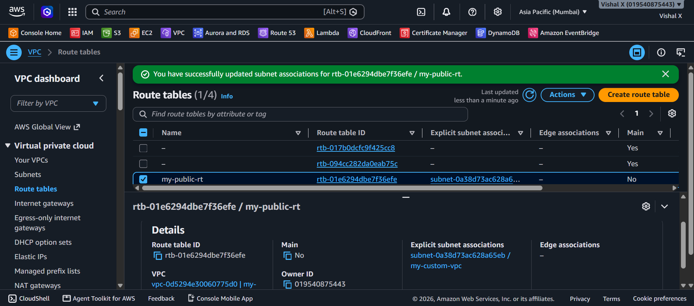
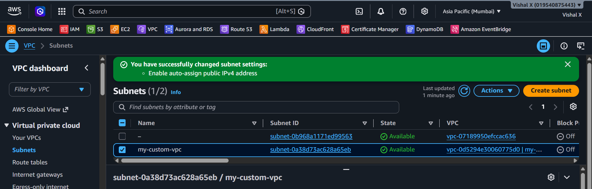
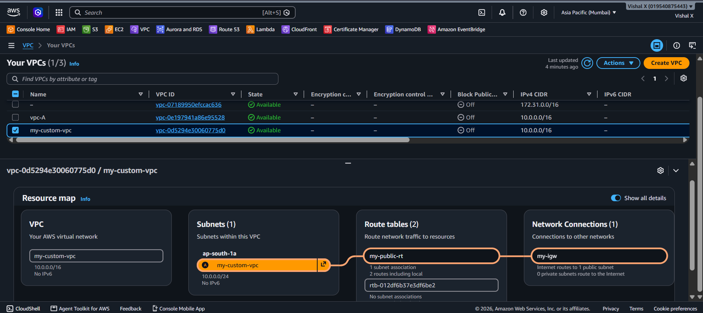
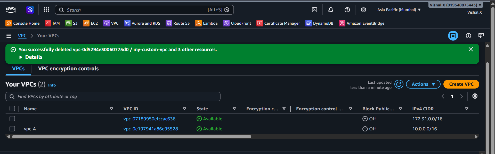

Custom VPC
Fourth project. This one took a bit more thinking than the others. I built a VPC from scratch — custom IP range, a public subnet, an internet gateway, and a route table to connect everything. No EC2 yet, just the network layer.
What I built
A custom VPC with one public subnet that can reach the internet.

Why this matters
By default AWS gives you a default VPC in every region. It works but it's not something you configured yourself. Building a custom VPC teaches you how networking actually works on AWS — IP ranges, subnets, routing, and gateways.
Services used
| Service | What I used it for |
|---|---|
| VPC | Isolated private network for my AWS resources |
| Subnet | A segment of the VPC in one availability zone |
| Internet Gateway | Connects the VPC to the internet |
| Route Table | Rules that control where network traffic goes |
Resources I created
| Resource | Value |
|---|---|
| Region | ap-south-1 |
| VPC | my-custom-vpc |
| VPC CIDR | 10.0.0.0/16 |
| Public Subnet | my-public-subnet |
| Subnet CIDR | 10.0.1.0/24 |
| Internet Gateway | my-igw |
| Route Table | my-public-rt |
Steps
1. Opened VPC Console
Went to the AWS Console and searched for VPC.

2. Created a VPC
- VPC Console → Your VPCs → Create VPC
- Selected VPC only
- Name:
my-custom-vpc - IPv4 CIDR:
10.0.0.0/16— this gives me 65,536 IP addresses to work with - Left everything else as default
- Clicked Create VPC

3. Created a public subnet
A subnet is a smaller network inside the VPC. I created one public subnet in a single availability zone.
- VPC Console → Subnets → Create subnet
- VPC: selected
my-custom-vpc - Subnet name:
my-public-subnet - Availability zone: ap-south-1a
- IPv4 CIDR:
10.0.1.0/24— gives 256 addresses in this subnet - Clicked Create subnet

4. Created an Internet Gateway
Without an internet gateway the VPC is completely isolated — nothing can reach the internet.
- VPC Console → Internet gateways → Create internet gateway
- Name:
my-igw - Clicked Create internet gateway
- Then clicked Actions → Attach to VPC
- Selected
my-custom-vpcand clicked Attach

5. Created a Route Table
A route table tells the subnet where to send traffic. I created a custom one and added a route to the internet gateway.
- VPC Console → Route tables → Create route table
- Name:
my-public-rt - VPC:
my-custom-vpc - Clicked Create route table
Then added a route to the internet:
1. Selected my-public-rt → Routes → Edit routes
2. Clicked Add route
3. Destination: 0.0.0.0/0 (all traffic)
4. Target: selected the internet gateway my-igw
5. Clicked Save changes

6. Associated the Route Table with the Subnet
The route table doesn't do anything until it's linked to a subnet.
- Selected
my-public-rt→ Subnet associations → Edit subnet associations - Checked
my-public-subnet - Clicked Save associations

7. Enabled Auto-assign Public IP on the Subnet
So that any EC2 instance launched in this subnet automatically gets a public IP.
- VPC Console → Subnets → my-public-subnet
- Actions → Edit subnet settings
- Checked Enable auto-assign public IPv4 address
- Clicked Save

8. Verified the setup
Went through each resource to confirm everything was connected: - VPC exists with correct CIDR - Subnet is inside the VPC - Internet gateway is attached to the VPC - Route table has the 0.0.0.0/0 route - Route table is associated with the subnet

9. Cleaned up
Deleted everything in this order (order matters — you can't delete a VPC that still has resources):
- Detach and delete the Internet Gateway
- Delete the Subnet
- Delete the Route Table (the custom one, not the main one)
- Delete the VPC

Commands
Things that can go wrong
| Problem | What caused it | How I fixed it |
|---|---|---|
| Can't delete VPC | Still has subnets or IGW attached | Deleted subnet and detached IGW first |
| Subnet not reachable | Route table not associated | Associated the route table to the subnet |
| No internet access | IGW not attached or route missing | Attached IGW to VPC and added 0.0.0.0/0 route |
| EC2 has no public IP | Auto-assign not enabled on subnet | Enabled auto-assign public IPv4 on the subnet |
Security notes
- This VPC only has a public subnet — for production you'd also add private subnets
- Resources in the public subnet are reachable from the internet — use security groups to control access
- A private subnet would have no route to the internet gateway — used for databases and internal services
Cost
VPC itself is free. Internet gateway has a small hourly charge (~$0.005/hr) plus data transfer costs. For this project the cost is minimal — i just terminated everything after testing.
What I learned
- What a VPC is and why you'd create a custom one
- How CIDR blocks work for IP address ranges
- What subnets are and how they divide a VPC
- What an internet gateway does and why you need one
- How route tables control traffic flow
- The order you have to delete VPC resources